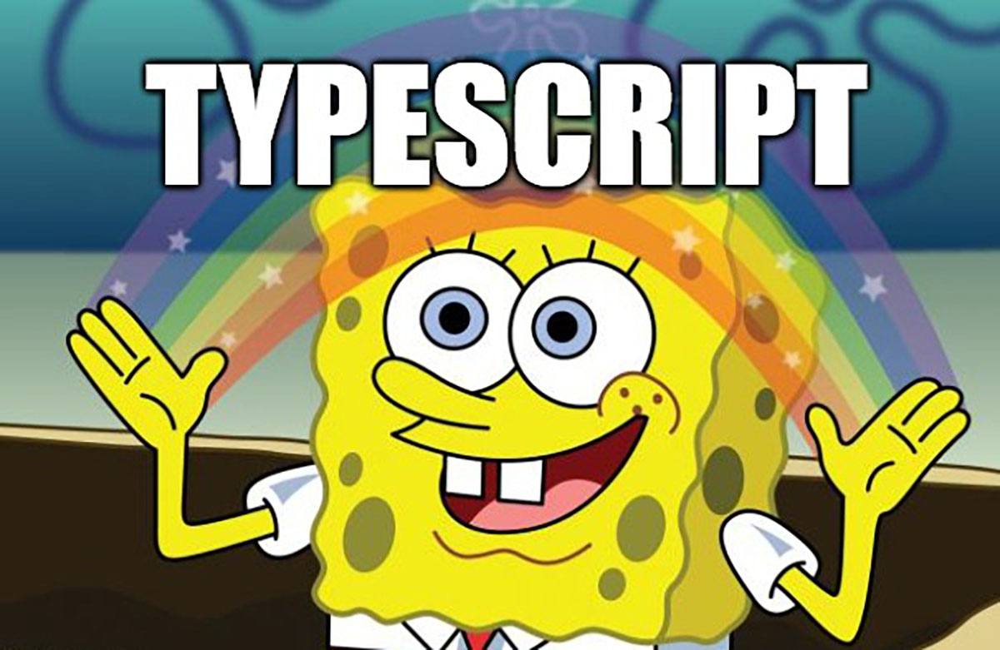
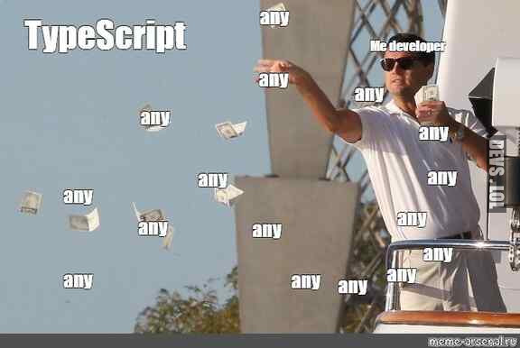

Made by Inna Astankovich
The Rolling Scopes School, 2023
The most basic datatype is the simple true/false value, which JavaScript and TypeScript call a boolean value.
let isDone: boolean = false;
As in JavaScript, all numbers in TypeScript are either floating point values or BigIntegers.
let decimal: number = 6;
let hex: number = 0xf00d;
let binary: number = 0b1010;
let octal: number = 0o744;
let big: bigint = 100n;
As in other languages, we use the type string to refer to these textual datatypes. TypeScript also uses
double quotes (") or single quotes (') to surround string data.
You can also use template strings
let color: string = "blue";
color = 'red';
Array types can be written in one of two ways. In the first, you use the type of the elements followed by [] to denote an array of that element type:
let list: number[] = [1, 2, 3];
The second way uses a generic array type.
let list: Array <number> = [1, 2, 3];
Tuple types allow you to express an array with a fixed number of elements whose types are known, but need not be the same.
// Declare a tuple type
let x: [string, number];
// Initialize it
x = ["hello", 10]; // OK
// Initialize it incorrectly
x = [10, "hello"]; // Error
Type 'number' is not assignable to type 'string'.
Type 'string' is not assignable to type 'number'.
A helpful addition to the standard set of datatypes from JavaScript is the enum. An enum is a way of giving more friendly names to sets of numeric values.
enum Color {
Red,
Green,
Blue,
}
let c: Color = Color.Green;
By default, enums begin numbering their members starting at 0. You can change this by manually setting the value of one of its members.
enum Color {
Red = 1,
Green = 2,
Blue = 4,
}
let c: Color = Color.Green;
We may need to describe the type of variables that we do not know when we are writing an application. This variable could be anything, so we give it the unknown type.
let notSure: unknown = 4;
notSure = "maybe a string instead";
// OK, definitely a boolean
notSure = false;
function getValue(key: string): any;
// OK, return value of 'getValue' is not checked
const str: string = getValue("myString");

void is a little like the opposite of any: the absence of having any type at all. You may commonly see this as the return type of functions that do not return a value:
function warnUser(): void {
console.log("This is my warning message");
}
In TypeScript, both undefined and null actually have their types:
// Not much else we can assign to these variables!
let u: undefined = undefined;
let n: null = null;
The never type represents the type of values that never occur.
// Function returning never must not
have a reachable end point
function error(message: string): never {
throw new Error(message);
}
function infiniteLoop(): never {
while (true) {}
}